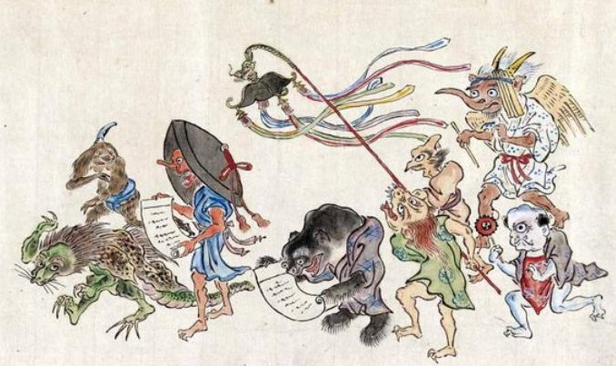

Hayao Miyazaki, nace el 5 de enero de 1941 en Bunkyō, Tokio, Japón, es un director de cine de animación, es animador, ilustrador, mangaka y productor de anime japones, es conocido a nivel internacional gracias a sus grandes obras en el mundo de la animación y es fundador junto a Isao Takahata, de uno de los estudios de películas y animación más grandes del mundo, Studio Ghibli, estando a la misma altura de compañías como Disney.
Estudio en la Universidad de Gakushuin hasta 1963, graduándose en ciencias políticas y en economía. En 1963 empieza a trabajar en Toei Animation como intercalador (encargado de dibujos entre movimiento) y con el tiempo se convirtió en el jefe del estudio, conociendo consigo a Isao Takahata; junto a él participaron en la creación de animes como Heidi y Marco para el estudio conocido hoy en día como Nippon Animation. En 1971 deja Toei y el 15 de junio de 1985, funda junto con Isao Takahata, Studio Ghibli.
Entre sus peliculas más populares se encuentran El viaje de Chihiro (que rebasó los ingresos en taquillas de Japón y superó el éxito obtenido por Titanic, también obtuvo el premio como Película del Año (2001) en los Premios de la Academia de Japón, y fue la primera película de anime en ganar un Premio Óscar), La princesa Mononoke, Mi vecino Totoro, El increíble catillo vagabundo y Ponyo.
Combinando la mitología japonesa con la extravagancia al estilo de Alicia en el país de las maravillas, El viaje de Chihiro consolidó la reputación de Miyazaki como icono de la animación y la narración.
Su temática habla de cómo el protagonista se adentra en este reino de los espíritus y queda totalmente separado del mundo real, La estadía de Chihiro en este mundo alternativo, que es muy similar a la famosa novela de Lewis Carroll, Las aventuras de Alicia en el país de las maravillas, representa el paso de la niñez a la adultez. El personaje también se mantiene fuera de los límites de la sociedad en el entorno sobrenatural. También hacían una crítica para ese entonces a la sociedad japonesa modernas en cuanto a la lucha contra la disolución de costumbres y la cultura tradicional, como también a la contaminación ambiental.
El viaje de Chihiro surgió como una idea para dedicarle a las hijas de amigos de él, ya que era tradición que cada verano Miyazaki pasara sus vacaciones junto a ellos. El quería crear una película especialmente para las niñas de 10 años, específicamente esas pequeñas, llevando consigo que empezara a leer mangas shōjo, como Nakayoshi y Ribon, mangas que llevaban las niñas a la cabaña esas vacaciones. Con esto Miyazaki se dio cuenta que estos mangas solo trataban temas subjetivos, como romances y enamoramientos, cosa que él no buscaba transmitirles a sus pequeñas amigas. Por eso decidió basar su película en una pequeña heroína a la que pudieran ver en su lugar.
Creé una heroína que es una chica corriente, alguien con quien el público puede simpatizar. No es una historia en la que los personajes crecen, sino una historia en la que pueden sacar lo que llevan dentro, dependiendo de las circunstancias particulares. Quiero que mis jóvenes amigos vivan así y creo que ellos también tienen ese deseo.Hayao Miyazaki
Para ese entonces Miyazaki tenía dos proyectos, los cuales ambos fueron rechazados, hasta que fue con en el tercer intento que termino como ganador convirtiéndose como lo conocemos hoy en día en “El viaje de Chihiro”. Las tres historias giraban en torno a una casa de baño inspirada a las que había en su ciudad natal. El autor pensaba que este era un lugar misterioso, con una pequeña puerta junto a las bañeras. Curioso por saber qué había detrás de esa puerta, terminó inventando varias historias al respecto; una de las cuales le sirvió de inspiración para crear la casa de baños que aparece en la película. Para la creación de algunas edificaciones del mundo de los espíritus, Miyazaki se inspiró en las estructuras reales que aparecen en el Museo de Arquitectura Al aire Libre Edo-Tokio, en Koganei, siempre estuvo fascinado por ese estilo pseudo occidental. Otra fuente de inspiración fue el Notoya Ryokan, una posada tradicional japonesa de la prefectura de Yamagata, famosa por su arquitectura y elementos ornamentales. La pequeña localidad de Jiufen, en Taiwán, también sirvió como modelo para el diseño del mundo de los espíritus de la película.
